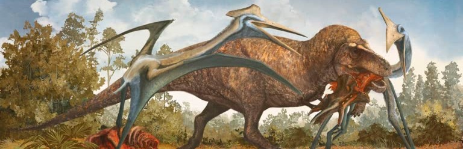

![original_logo[DinoSpace]](img/hop.png)

The Quztacoatlus Northropi is an azhdarchid pterosaur and was believed by palaeontologists to be one of the largest flying creatures to have ever lived, living roughly 66-72 million years before humans lived on earth. The Quztacoatlus Northropi is an azhdarchid pterosaur and was believed by palaeontologists to be one of the largest flying creatures to have ever lived, living roughly 66-72 million years before humans lived on earth.

How do fossils form and what can they tell us about prehistoric life? Visit this page to learn more about fossilisation and how bone turns to stone over time.
Learn More
Easily one of the greatest beings of the prehistoric era, learn more about the amazing Quezlacoatlus Northropi and how it lived in our world!.
Learn More
Learn about the fascinating story behind the Quezlacoatlus Northropi's discovery and what it reveals about prehistoric life, and how it changed our understanding of the prehistoric world.
Learn More
Discover the diverse world of pterosaurs, including the mighty Quezlacoatlus Northropi and other incredible species that ruled the skies during the prehistoric era.
Learn MoreHe discovered the fossil at the big ben national park.
The rarest type of fossilisation occurs in soft body parts! Such as misquitoes, jellyfish and skin :)
The Quezlacoatlus is an azhdarchid pterosaur which is a seperate lineage from true dinosaurs.
We are The Pterasaur Show team! A student passion project centered around the amzing Queztlacoatlus Northropi and the fascinating science behind fossilisaiton. All of our information has been dedicatedly collected and curated for your enjoyment and easy access acros multiple knowledgeable scources and paleontologists from around the world! Any querries about our authenticity can be easilt communicated to us through our contact page.
This website is dedicated to exploring the fascinating world of the Queztlacoatlus Northropi fossil discovries, some of it's later research, general information about pterosaurs and the science behind fossilisation. We hope to provide a fun and educational experience for all of our visitors, and we hope you enjoy your time on our website! Remember, this is a student lead project and we are always open to feedback and suggestions for improvement from our contact page.